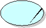

| Артефакт: Business Use Case |
|
|  |
| A Business Use Case (class) defines a set of business use-case instances in which each instance is a sequence of actions that a business performs that yields an observable result of value to a particular business actor, or that shows how the business responds to a business event, to yield a business benefit. |
| Типы рабочих продуктов: Элементы модели |
|
Назначение
|
A Business Use Case describes a business process from an external, value-added point of view. Business Use Cases are
business processes that cut across organization boundaries, possibly including partners and suppliers, in order to
provide value to a stakeholder of the business. A Business Use Case is a (process-oriented specification of business
behavior in response to the following:
-
interaction between business and business actors
-
significant business events
A Business Use Case is an account of a pattern of usage of a business, and the effect that usage has on the environment
(especially the Business Actor(s)) and on the business itself - the usage may change the way the business responds to
future events or interactions. What the business directly and explicitly provides to its environment are
services (the business from this perspective is simply the top level Business System and should therefore
encapsulate its resources and provide well-defined services to its environment - see Guideline: Business System), and the interaction between the Business Actor and the
business, as described in the Business Use Case, will take place through the invocation of one or more of those
services. See Guideline:
Business Use Case.
Business Use Cases are useful for anybody who wants to know what value the business provides and how it interacts with
its environment. Stakeholders, business-process analysts, and business designers use Business Use Cases to describe
business processes and to understand the effect of any proposed changes (for example, a merger or a first CRM
implementation) on the way the business works. Business Use Cases are also used by system analysts and software
architects to understand the way a software system fits into the organization. Test managers use Business Use Cases to
provide context for developing test scenarios for software systems. Project managers use Business Use Cases for
planning the content of business-modeling iterations and tracking progress.
|
Взаимосвязи
| Артефакт-контейнер |
|
| Роли | Ответственный:
| Изменен:
|
Описание
| Краткая схема |
A template is provided for a
Business Use Case Specification, which contains the textual properties of the Business Use Case. This document is
used with a requirements management tool, such as Rational RequisitePro, for specifying and marking the requirements
within the Business Use-Case properties.
The diagrams of the Business Use Case can be developed in a visual modeling tool, such as Rational Rose. A
Business Use-Case report (with all properties) may be generated with Rational SoDA.
For more information, see tool mentors: Managing Use Cases with Rational Rose and Rational RequisitePro and
Creating a Use-Case Report Using Rational SoDA.
|
Иллюстрации
Доводка
| Опции представления |
UML Representation: Use case, stereotyped as <<business use case>>
A business use case may have the following properties:
-
Name: The name of the Business Use Case.
-
Brief Description: A brief description of the role and purpose of the Business Use Case.
-
Performance Goals: A specification of the metrics relevant to the Business Use Case, and a
definition of the goals of using these metrics.
-
Workflow: A textual description of the workflow that the Business Use Case represents. The flow
should describe what the business does to deliver value to a business actor, not how the business
solves its problems. The description should be understandable by anyone within the business.
-
Category: Whether the Business Use Case is of the category "core," "'supporting," or
"management."
-
Risks: A specification of the risks of executing or implementing the Business Use Case. Risk is
defined in terms of the potential difference between added value as expected versus added value as provided.
-
Possibilities: A description of the estimated improvement potential of the Business Use
Case.
-
Process Owner: A definition of the owner of the business process, that is, the person who manages
the changes and plans for changes.
-
Special Requirements: The Business Use-Case characteristics and quantifiers that are not covered
by the workflow as it has been described.
-
Extension points: A list of locations within the flow of events of the Business Use Case at which
additional behaviors can be inserted using the extend-relationship.
-
Supported Business Goals: Stereotyped dependencies indicating the Business Goals supported by the
Business Use Case.
-
Relationships: The relationships, such as communicates-associations, include-and
extend-relationships, in which the Business Use Case participates.
-
Activity Diagrams: These diagrams show the structure of the workflow.
-
Use-Case Diagrams: These diagrams show the relationships involving the Business Use Case.
-
Illustrations of the Workflow: Hand-drawn sketches or the results of storyboarding sessions.
If you perform business modeling merely to chart an existing target organization, with no intention of changing it, you
could exclude the following sections from the outline of the Business Use-Case Specification:
-
Performance Goals
-
Risks
-
Possibilities
-
Process Owner
|
Дополнительные сведения
| Справочные таблицы |
|
| Концепции |
|
| Рекомендации |
|
|
© Copyright IBM Corp. 1987, 2006. Все права защищены..
|
|